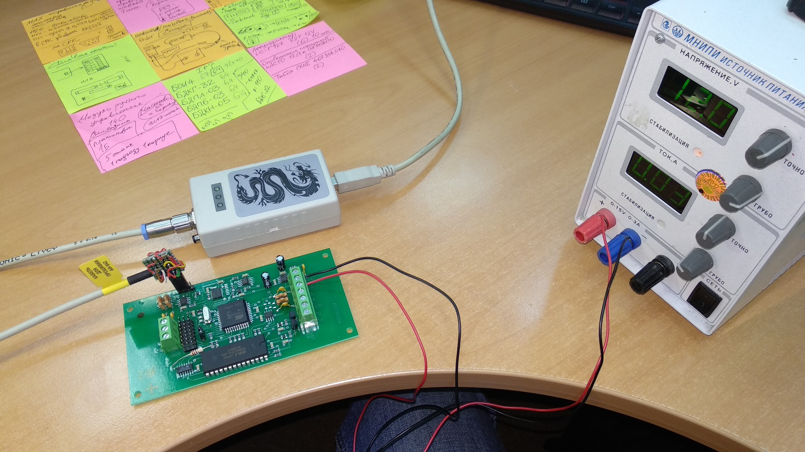
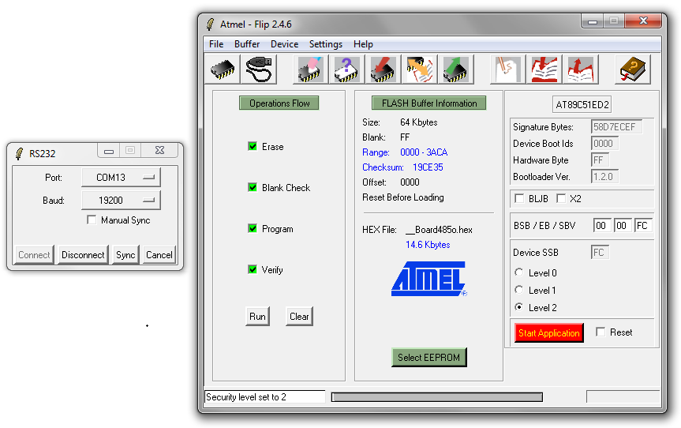
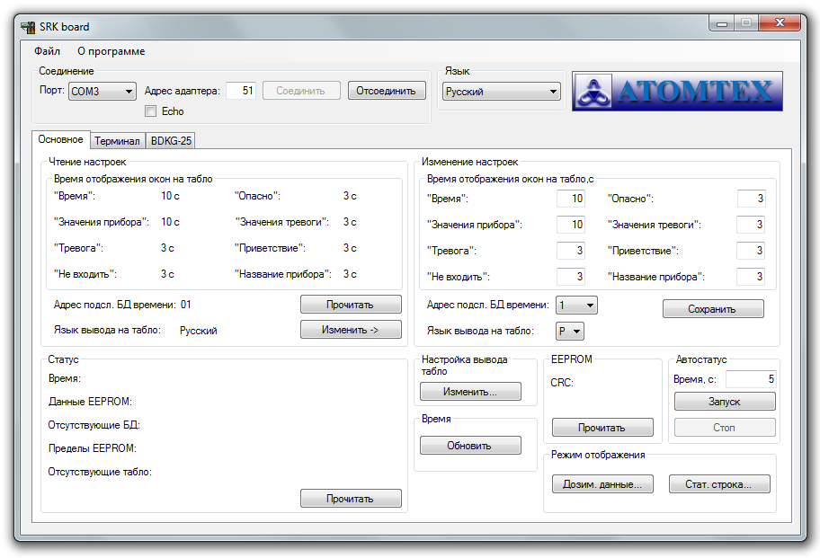
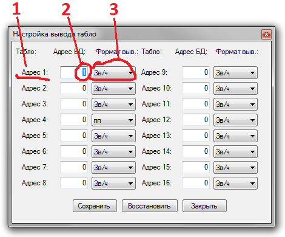
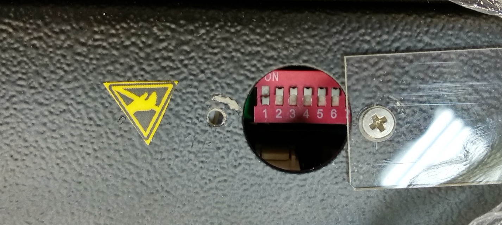

942-й адаптер интерфейсный

- Подключить питание
- Вставить перемычку
- Подключить спец кабель к BLS
- Можно немного проще. Потом напишу как
- Запустить Flip
- Скорость 19200? 
- Достать перемычку
{kind=link}

Далее следует настроить адаптер
Для работы с маленьким табло

- Подключить 942-й адаптер через USB-COM адаптер
- Или так:
- Запустить программу SRK-Board
- Для подключения к адаптеру выбрать порт, адрес (всегда 51), нажать соединить
- Выбрать язык, адрес подключенного БД, выставить временные интервалы для отображения окон табло 
- Для настройки отображения подключаемого БД нажать "Настройка вывода табло" ⇒ "Изменить"
- Выбрать к какому табло (адрес табло настраивается на самом табло переключателями) будет подключен БД [1], какой адрес будет у этого БД [2], и в каких единицах будут выводиться показания [3] 
- На самом табло настроить адрес:
- В положении "ON" означает выключено, адрес вводится первыми 5-ю рычажками в двоичном виде (00001 значит 1-й, 00010 2-й, 00011 3-й и т.д.), 6-7-8 всегда выключены (сервисные настроцки) 


Для работы с большим табло
 Большое табло настраивается с помощью джамперов на плате адаптера (подробнее
о настройке)
Большое табло настраивается с помощью джамперов на плате адаптера (подробнее
о настройке)